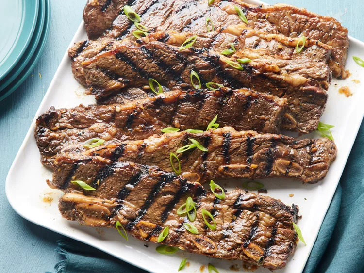

Korean BBQ Short Ribs Recipe

Description
This is an easy way to make Korean short ribs. You can also substitute chicken breasts or sliced ribeye for the short ribs. If you use chicken or ribeye, you must add thinly sliced green onion tops. This can also be broiled in the oven for the same amount of time.
Ingredients
- ¾ cup soy sauce
- ¾ cup water
- 3 tablespoons of white vinegar
- 2 tablespoons of toasted sesame oil
- ½ large onion, minced
- ¼ cup dark brown sugar
- 2 tablespoons of white sugar
- 1 tablespoon of black pepper
- 3 pounds Korean-style short ribs (beef chuck flanken, cut 1/3- to 1/2-inch thick across bones)
Steps
- Gather all ingredients
- Pour soy sauce, water, vinegar, and sesame oil into a large, non-metallic bowl. Whisk in onion, garlic, brown sugar, white sugar, and pepper until sugars dissolve.
- Submerge ribs in marinade; cover the bowl and refrigerate 7 to 12 hours - the longer, the better.
- Preheat an outdoor grill for medium-high heat. Remove ribs from marinade and shake off excess; discard marinade.
- Cook on the preheated grill until the meat is no longer pink, 5 to 7 minutes per side.
- Serve and enjoy!
Return Home